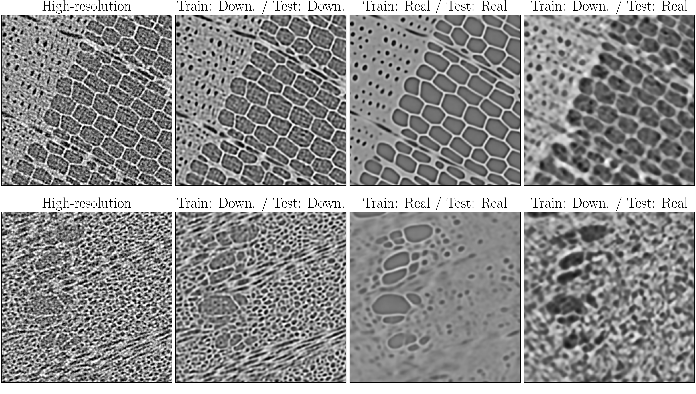
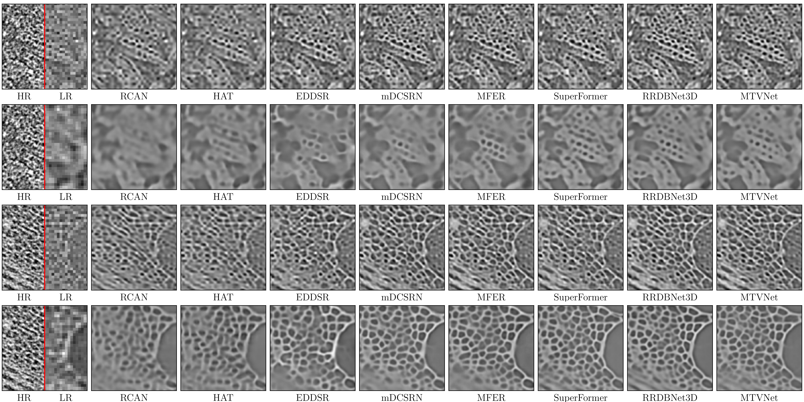
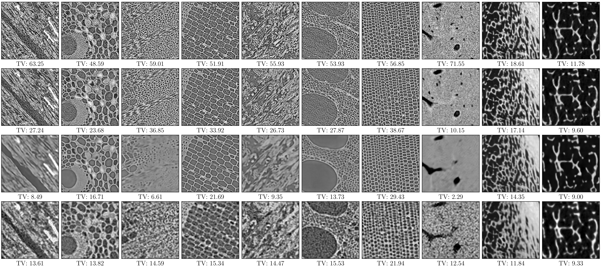
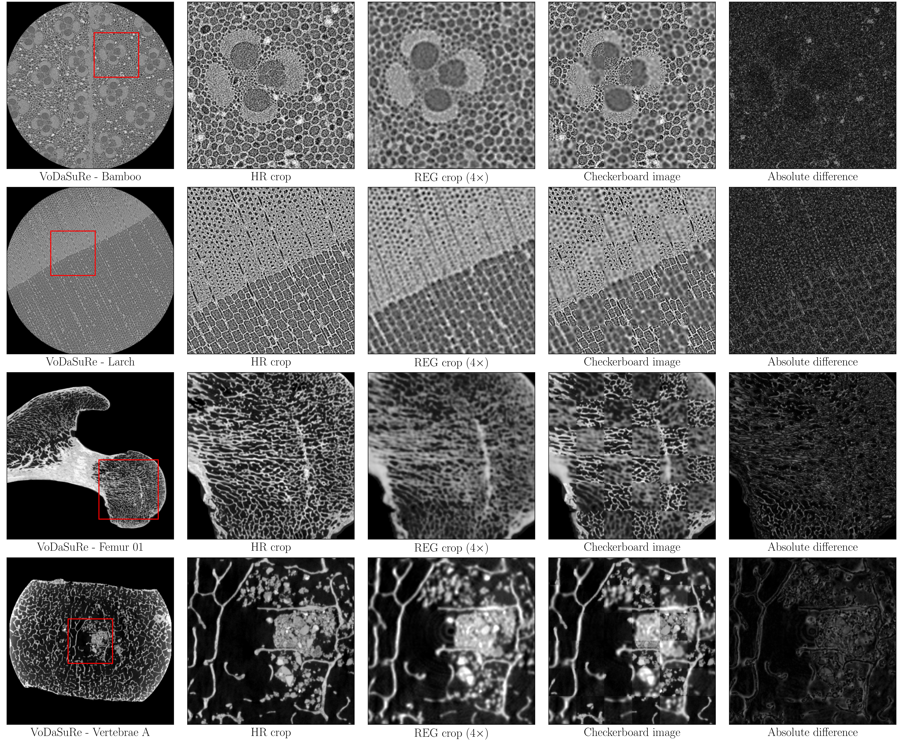

Domain shift revealed in volumetric super-resolution
- When trained on real low-resolution data using pixel-wise losses, super-resolution models produce oversmoothed predictions, failing to recover fine structures.
- Models trained on synthetically downscaled data produce impressive results on synthetic data, but fail to generalize to realistically acquired volumetric data.
- When evaluated on real low-resolution data, models trained on synthetic data hallucinate structures.
- We show that the practice of training models on synthetic data requires re-evaluation for real-world applications.

Diverse Microstructures

Our dataset comprises 16 samples, including four human femurs and four vertebrae, animal bone, wood samples from five tree species, and composite materials including medium-density fiberboard (MDF) and cardboard laminate.
Results
Comprehensive Benchmarking
We evaluate a wide range of state-of-the-art super-resolution models on the VoDaSuRe dataset, including 2D and volumetric SR models. We observe that models trained on synthetic LR data are able to recover most of the high-frequency information, while the same models trained on real LR data hallucinate over-smoothed microstructures.

Synthetic vs. Real Data
We compute total variation (TV) to quantify the loss of high-frequency information in SR predictions. We observe that TV decreases notably in SR predictions using downscaled LR inputs compared with HR data. Yet, we observe an even lower TV in predictions using scanned LR data. This substantial loss of fine-scale structural detail confirms that super-resolution of real LR data is a significantly harder problem than upscaling downscaled LR volumes.

Preprocessing
Data Pipeline
We collect multi-resolution nested CT scans of the same sample, after which we crop and register LR data to the downsampled HR volumes. LR and HR volumes are masked and their intensity histograms are matched. All scans are saved to OME-Zarr with up to four resolution levels, using separate groups for HR, LR, and registered data.

Registration
Volumetric registration of HR-LR data is performed using the ITK-Elastix toolbox. We register the LR volumes to the downsampled HR volumes using an affine transformation model, allowing slight deformations of the LR scan to ensure voxel-level correspondence.

Overview of VoDaSuRe
| Sample name | High-resolution | Low-resolution | Registered | Slice split (train/test) |
|---|---|---|---|---|
| Bamboo | 5440 × 1920 × 1920 | 3520 × 1920 × 1920 | 1360 × 480 × 480 | 1360 / 120 |
| Cardboard | 5120 × 1920 × 1920 | 3360 × 1920 × 1920 | 1280 × 480 × 480 | 1280 / 120 |
| Cypress | 5440 × 1920 × 1920 | 1920 × 1920 × 1920 | 1360 × 480 × 480 | 1240 / 120 |
| Elm | 5440 × 1920 × 1920 | 3520 × 1920 × 1920 | 1360 × 480 × 480 | 1240 / 120 |
| MDF | 4800 × 1920 × 1920 | 3520 × 1920 × 1920 | 1200 × 480 × 480 | 1080 / 120 |
| Ox bone | 4960 × 1920 × 1920 | 1920 × 1920 × 1920 | 1240 × 480 × 480 | 1120 / 120 |
| Oak | 5440 × 1920 × 1920 | 3200 × 1920 × 1920 | 1360 × 480 × 480 | 1240 / 120 |
| Larch | 5120 × 1920 × 1920 | 3200 × 1920 × 1920 | 1280 × 480 × 480 | 1160 / 120 |
| Femur 15 | 1600 × 1280 × 1920 | 600 × 600 × 600 | 400 × 320 × 480 | Train |
| Femur 21 | 1280 × 1600 × 1760 | 600 × 600 × 600 | 320 × 400 × 440 | Train |
| Femur 74 | 1120 × 1760 × 1600 | 600 × 600 × 600 | 280 × 440 × 400 | Train |
| Femur 01 | 960 × 1440 × 1600 | 600 × 600 × 600 | 240 × 360 × 400 | Test |
| Vertebrae A | 1920 × 1920 × 1920 | 800 × 960 × 640 | 480 × 480 × 480 | Train |
| Vertebrae B | 1920 × 1920 × 1920 | 800 × 960 × 640 | 480 × 480 × 480 | Train |
| Vertebrae C | 1920 × 1920 × 1920 | 960 × 800 × 960 | 480 × 480 × 480 | Train |
| Vertebrae D | 1920 × 1920 × 1920 | 960 × 800 × 960 | 480 × 480 × 480 | Test |
Overview of dataset samples with volume shapes and slice splits.
BibTeX
@article{hoeg2026vodasure,
title={VoDaSuRe: A Large-Scale Dataset Revealing Domain Shift in Volumetric Super-Resolution},
author={August Leander Høeg and Sophia Wiinberg Bardenfleth and Hans Martin Kjer and Tim Bjørn Dyrby and Vedrana Andersen Dahl and Anders Dahl},
journal={Proceedings of the Computer Vision and Pattern Recognition Conference},
year={2026},
url={https://augusthoeg.github.io/VoDaSuRe/}
}